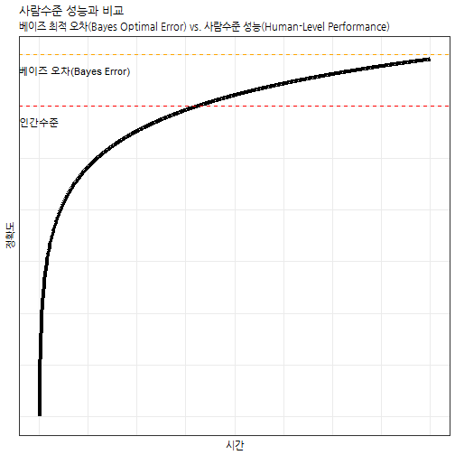

xwMOOC 딥러닝
Structuring Machine Learning Projects - 기계학습 전략
1. 기계학습 전략
기계학습 전략은 결국 최소한 사람수준 인공지능 알고리즘을 제작하는 것이기에 복잡하다. 따라서, 주어진 자원과 시간내에 유의미한 산출물을 제작하는데 다양한 시도를 할 수 있지만, 기계학습 전반적인 과정과 데이터 분석을 통한 냉철한 현실인식을 통해서만 가능하다. 일반적으로 기계학습 알고리즘 성능향상을 위해서 취할 수 있는 방안에 대해 아이디어를 나열해보면 다음과 같다.
- 더 많은 데이터 수집
- 더 다양한 훈련 데이터 수집
- 경사하강법으로 더 오래 알고리즘을 훈련시킴
- 경사하강법 대신 ADAM 최적화 기법 적용
- 더 복잡한 혹은 간결한 신경망 아키텍쳐 시도
- Dropout 시도
- 정규화 \(L_2\) 적용
- 네트워크 아키텍쳐 조합
- 활성화 함수(Activation Function)
- 은닉 유닛(Hidden Units) 갯수
- …
직교화(Orthogonalization)
서로 독립적이고 간섭이 없는 직교화(Orthogonalization) 개념을 내포하여 기계학습 알고리즘 개발과정을 단계별로 나눠 오차분석(Error Analysis)과 결합하여 단시간내에 단일목표를 달성할 수 있도록 효과적으로 개발한다.
- 훈련데이터를 비용함수(Cost Function)에 최적화해 학습시킴
- 조기종료(Early Stopping)
- 더 깊고 커다란 신경망 적용
- Adam 최적화 방법 적용
- …
- 개발(dev)데이터를 비용함수를 고려하여 일반화시킴
- 정규화(Regularizatin)
- 더 많은 훈련 데이터
- …
- 검증(test) 데이터를 비용함수를 고려하여 검증
- 더 많은 개발데이터
- …
- 실제 운영환경에 적용
- 개발 데이터 혹은 비용함수 조정
2. 기계학습 목표설정
기계학습 인공지능 알고리즘 개발과정은 폭포수 모형(Waterfall model)보다는 반복적인 애자일(Iterative Agile) 방법론이 적합하다.

2.1. 단일 평가 측도 설정
기계학습 인공지능 알고리즘 성능을 평가하는 지표는 다양하다. 하지만, 단일 평가 측도를 설정하는 것이 여러모로 장점이 많다.
| 분류기(Classifier) | Precision | Recall |
|---|---|---|
| A | 95 % | 90 % |
| B | 98 % | 85 % |
Precision은 분류기가 예측한 것 중 얼마를 맞췄는가에 중점을 뒸다면, Recall은 실제로 얼마를 맞췄는가에 초점을 뒀다. Precision과 Recall 모두 중요한 평가 측도가 되지만, 이를 단일 평가 측도로 만들면 추후 인공지능 개발과정이 수월하다. 이런 목적으로 조화평균(Harmonic Mean)으로 F1 점수를 사용한다.
\[\frac{2} {\frac{1}{Precision} + \frac{1}{Recall}}\]
2.2. 최적화 및 만족화를 고려한 측도
기계학습 성능평가 측도를 하나만 갖는 것은 때때로 불가능하다. 이런 경우 기계학습 성능을 제약조건 아래에서 최적화해야 하는 경우도 있다.
| 분류기(Classifier) | 정확도(Accuracy) | 실행시간(Running Time) |
|---|---|---|
| A | 90 % | 80 ms |
| B | 92 % | 95 ms |
| C | 95 % | 1,500 ms |
선형계획법(Linear Programming)으로 문제에 접근하면 다음과 같다.
- Maximize: Accuracy
- Subject to running time < 100 ms
즉, N개 측도 중에서 최적화 1개를 최적화하고 N-1개 측도를 만족하는 조건으로 생각할 수도 있고, 최적화 1개 측도가 고정되어 있다면 N-1개 측도 손실을 최소화하는 것으로 볼 수도 있다.
2.3. 훈련-개발-검증 데이터셋
확률 통계를 전공했다면 익숙한 개념일 수 있지만, 컴퓨터공학 전공자들에게는 생소한 개념일 수도 있다. 훈련-개발-검증 데이터셋은 동일한 분포에서 나와야만 의미가 있다. 사실 훈련-개발-검증 데이터셋을 R이나 파이썬 코드로 나눠서 학습을 시키고 검증을 할 경우 컴퓨터는 묵묵히 주어진 작업만 성실히 수행한다. 따라서, 인공지능 알고리즘을 개발하는 개발자가 통계, 확률적인 개념을 갖추고 알고리즘 개발을 수행해야만 유의미한 결과를 쉽고 빠르게 도출할 수 있다.
- 잘못된 사례: 서로 다른 분포에서 표집함.
- UK, US, Other Europe, South America → 훈련/개발(train/dev) 관측점
- India, China, Other Asia, Australia → 검증(test) 관측점
- 실제 잘못된 사례: 분포가 다른 대출 알고리즘 개발하여 실패한 사례
- 중간 소득이 거주하는 우편번호 기준 훈련/개발(train/dev) 관측점을 바탕으로 예측모형 개발
- 저소득 거주하는 우편번호 기준 검증(test) 관측점을 적용하여 검증시도
2.4. 훈련-개발-검증 데이터셋 크기
훈련-개발-검증 데이터셋 크기는 과거 데이터가 작을 경우 7:3, 혹은 6:2:2로 구분하였으나, 최근에는 대부분의 데이터를 훈련에 집어넣는다. 이유는 데이터 크기가 매우 커졌기 때문이다. 과거 7:3 혹은 6:2:2로 구분했을 경우 10,000 혹은 100,000 정도였다면, 현재는 쉽게 백만, 천만, 일억건을 넘는 데이터를 쉽게 찾아볼 수 있다.

3. 사람수준 성능을 내는 신경망
기계학습 알고리즘이 사람수준 성능을 넘어서 현실에 폭넓게 적용된 사례는 다음과 같다.
- 온라인 광고
- 제품 추천
- 물류: 주행시간 예측
- 금융대출
즉, 정형화된 관계형 데이터베이스를 기반으로 데이터가 상당히 많은 분야가 우선 사람능력을 넘어섰고, 사람의 인지가 우세했던 음성인식, 이미지 인식 등 분야에서도 상당한 진보를 목도하고 있다.
지도학습(Supervised Learning)의 두가지 기본 가정을 편향-분산 트레이드오프(Bias-Variance Tradeoff)로 설명하면 다음과 같다.
- 지도학습의 두가지 근본 가정
- 훈련데이터를 정말 잘 학습 → 회피가능한 편이(Avoidable Bias)
- 훈련데이터로 학습된 성능은 개발/검증(dev/test) 데이터에도 일반화를 무리없이 수행 → 분산(Variance)
지도학습을 통한 인공지능 알고리즘을 개발할 경우 시간이 지나면서 정확도는 상승하게 된다. 특히, 최근 신경망 알고리즘을 통한 성능이 인간을 넘어서는 경우도 심심치 않게 발견할 수 있다. 지도학습의 경우 \(X \Rightarrow Y\) 로 보게 되면 음성정보(\(X\))가 들어가면 이를 받아쓰기한 글자(Y)가 되던가, 고양이 사진(\(X\))이 들어가면 고양이 사진 판별여부(“0/1” 혹은 “Yes/No”)로 분류되어 정확도를 따질 수 있다.
시간이 지나면서 지도학습 알고리즘 성능이 비약적으로 증가하여 사람수준 성능에 근접하는 것이 하나의 전환점이 되지만, 그후 상당한 노력과 자원을 투여해도 좀처럼 급격한 성능향상을 기대하는 것은 쉽지 않고 인공지능 알고리즘의 상한으로 베이즈 최적 오차(Bayes Optimal Error)가 존재한다.
x <- seq(1:1000)
y <- log(x)
df <- data.frame(x=x, y=y)
ggplot(df, aes(x, y)) +
geom_line(size=1.5) +
geom_hline(yintercept=6.0, linetype="dashed", color="red") +
geom_hline(yintercept=7.0, linetype="dashed", color="orange") +
annotate("text", label = "인간수준", x=0.5, y=5.7, color="black") +
annotate("text", label = "베이즈 오차(Bayes Error)", x=90.5, y=6.7, color="black") +
theme_bw(base_family="NanumGothic") +
labs(x="시간", y="정확도", title="사람수준 성능과 비교",
subtitle="베이즈 최적 오차(Bayes Optimal Error) vs. 사람수준 성능(Human-Level Performance)") +
theme(axis.text.x=element_blank(),
axis.ticks.x=element_blank(),
axis.text.y=element_blank(),
axis.ticks.y=element_blank())
지도학습 기계학습 알고리즘 성능이 기대에 못미치는 경우 다음 세가지 조치를 취할 수 있다.
- 사람으로부터 더 많은 학습데이터(labeled data) 수집
- 수작업으로 오차분석(error analysis)을 통해 깨달음 통찰(insight)을 얻음
- 편향-분산 트레이드오프 추가 분석

3.1. 고양이 분류기 사례
고양이 분류기 알고리즘을 개발할 때 데이터인 고양이 사진에 잡음이 많거나 저해상도 핸드폰 카메라로 사진을 찍을 경우 사람이 봐도 분류가 잘 안되는 경우가 많다. 그런 경우 사람오차도 크게 되고 따라서 베이즈 오차도 크게 나게 된다. 사람오차와 훈련데이터 오차가 큰경우가 훈련오차와 개발(dev)오차가 크게 되는 경우 주안점을 둬서 추진할 사항이 달라지게 된다.
| 구분 | 사례 1 | 사례 2 |
|---|---|---|
| 사람(베이즈)오차 | 1 % | 7.5 % |
| 훈련 오차 | 8 % | 8 % |
| 개발(dev) 오차 | 10 % | 10 % |
| 대책 | 편향오차 축소 | 분산 축소 |
3.2. 베이즈 오차에 대한 대용측도로서 사람오차
베이즈 오차에 대한 대용측도로 사람측도를 정의하는 사례를 살펴본다. 의료영상 이미지를 바탕으로 질병을 분류하는 사례를 예를 들면, 보통 사람이 분류하면 약 3% 오분류를 하게 되고, 보통 의사는 1%, 경험많은 숙련의는 0.7%, 숙련의로 구성된 팀의 경우 0.5% 오분류를 낸다고 가정하면 베이즈 최적오차는 어떤 값으로 설정하는 것이 맞는가?
| 구분 | 오차율 |
|---|---|
| 보통 사람 | 3 % |
| 보통 의사 | 1 % |
| 숙련의 | 0.7 % |
| 숙련의 팀 | 0.5 % |
3.3. 데이터 불일치
훈련데이터와 개발/검증 데이터가 불일치하는 문제가 기계학습 인공지능 알고리즘 개발에 발생할 수 밖에 없다.
- 이미지 인식 및 분류기 개발
- 훈련 데이터: 고해상도 웹 이미지
- 개발/검증 데이터: 저해상도 핸드폰 이미지 데이터
- 차량 음성인식
- 훈련 데이터: 음성 구매 데이터, 보이스 키보드, …
- 검증 데이터: 실제 차량 음성 데이터
실제 흔한 데이터는 고해상도 이미지 데이터가 많지만, 목표로 분류해야하는 이미지는 저해상도 이미지인 경우 고해상도 이미지와 저해상도 이미지를 뒤섞어 훈련, 개발, 검증 데이터로 분할하여 분류알고리즘을 생성하는 것은 바람직하지 않다. 대신에 개발과 검증에 저해상도 핸드폰 이미지를 넣고 훈련 데이터에 일부 저해상도 이미지를 섞어 분류 예측 알고리즘을 개발하는 것이 추천된다.

데이터 불일치에 따른 오차를 줄이고자 노력을 했음에도 그로인한 차이가 현저하다면, 수작업으로 오차분석을 수행한다. 그리고, 데이터를 합성하여 훈련데이터를 실제 검증데이터와 더 유사하게 만들어 투입한다.

4. 오차분석
정확도가 떨어지는 원인을 오차(error)에서 찾아 이를 추가적으로 분석한다. Andrew Ng 박사의 경우, 오차가 발생된 원인을 스프레드쉬트를 통해 데이터화 하고 이를 오차분석에 활용한다.
| 이미지 | 고양이를 개로 오인 | 큰 고양이과 동물로 오인 | 흐릿한 이미지 | 인스타그램 필터 | 주석 |
|---|---|---|---|---|---|
| 1 | ✔ | ||||
| 2 | ✔ | ✔ | |||
| 3 | ✔ | ||||
| 4 | ✔ | ||||
| 5 | ✔ | ||||
| … | |||||
| 평균 | 8 % | 43 % | 61 % | 12 % |
강아지를 고양이로 라벨이 잘못 표식한 경우, 통상 라벨이 잘못 붙여진 경우 이를 학습하면 알고리즘 정확도가 떨어지지만, 딥러닝 알고리즘의 경우 이러한 오차에 강건하다.
| 이미지 | 고양이를 개로 오인 | 큰 고양이과 동물로 오인 | 흐릿한 이미지 | 라벨 오류 | 주석 |
|---|---|---|---|---|---|
| 1 | ✔ | ||||
| 2 | ✔ | ✔ | 배경사진 고양이 빠뜨림 | ||
| 3 | ✔ | ||||
| 4 | ✔ | 고양이 그림 | |||
| 5 | ✔ | ||||
| … | |||||
| 평균 | 8 % | 43 % | 61 % | 6 % |
- 전반적인 오차: 10 %
- 라벨오류로 인한 오차: 0.6%
- 다른 원인에 의한 오차: 9.4%
전반적인 오차가 10%인 경우 상기 사례의 경우 라벨 오류가 상대적으로 작아 다른 원인에 의한 오차를 개선하는 것이 최우선이다.
인공지능 알고리즘 개발 지침(Guideline)
인공지능 예측 시스템을 재빨리 개발하고 나서, 반복하여 개발해 나가라. 단일 평가 지표를 바탕으로 지속적으로 평가지표를 모니터링하면서 오차분석을 통해 적은 노력으로 단일 평가 지표를 획기적으로 개선할 수 있는 대상에 집중하여 차근차근 알고리즘 성능을 개선해 나간다.
Build your first system quickly, then iterate
5. 끝과 끝을 붙인 딥러닝(end-to-end Deep Learning)
끝과 끝을 붙인 딥러닝(end-to-end Deep Learning)은 데이터를 그 자체로 사용한다는 점에서 장점이 있고, 수작업으로 필요한 딥러닝 구성요소를 넣을 필요가 없다는 점에서 장점이 많다. 하지만, 상당히 많은 대량의 데이터가 필요하고 이미 개발된 훌륭한 구성요소를 활용할 수 없다는 면에서 단점이 된다.